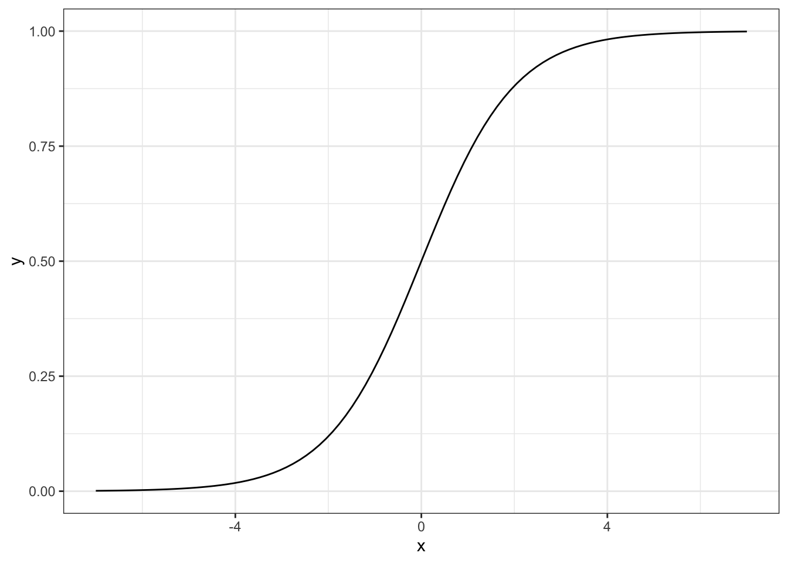
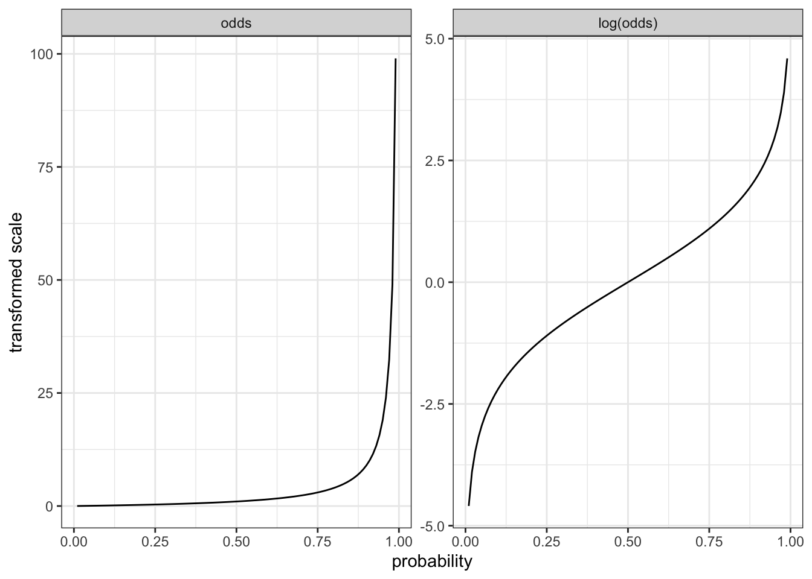
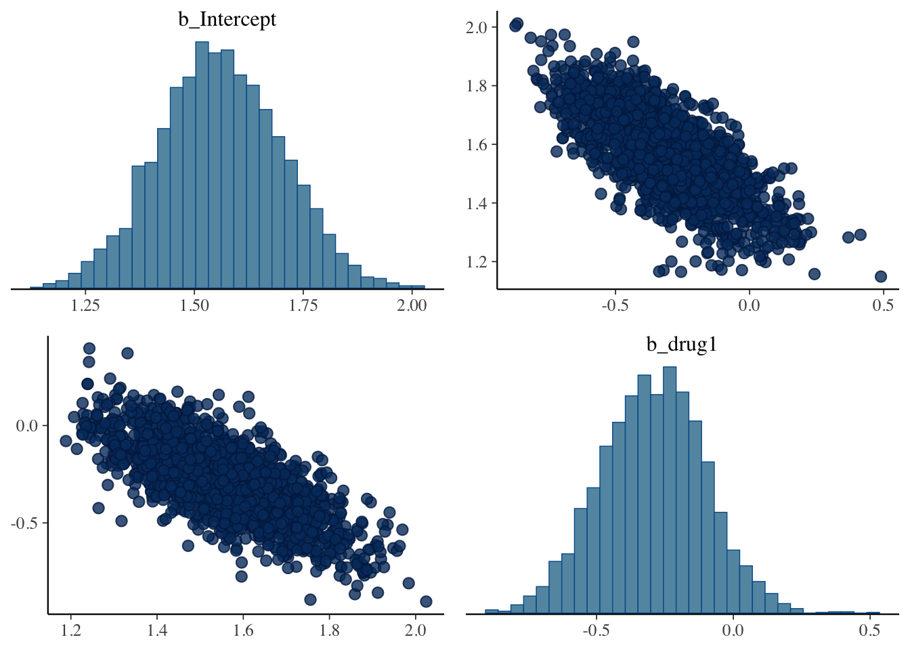
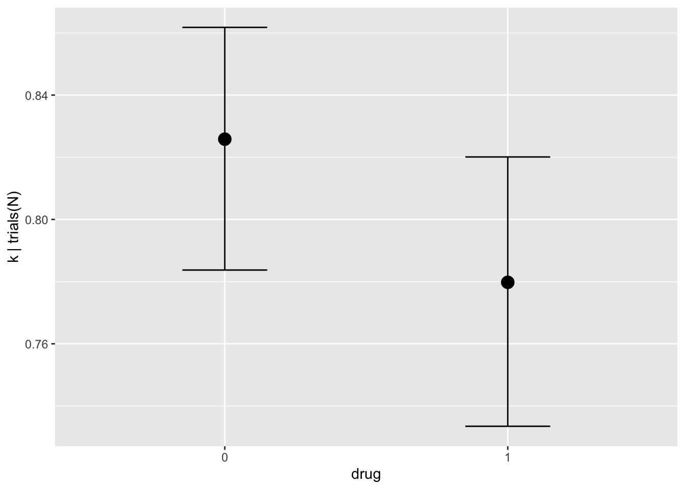
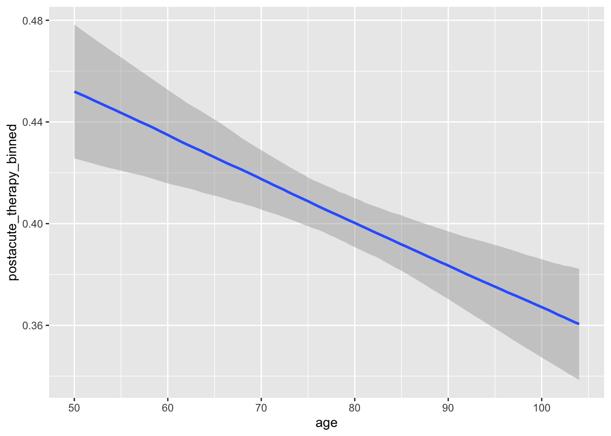
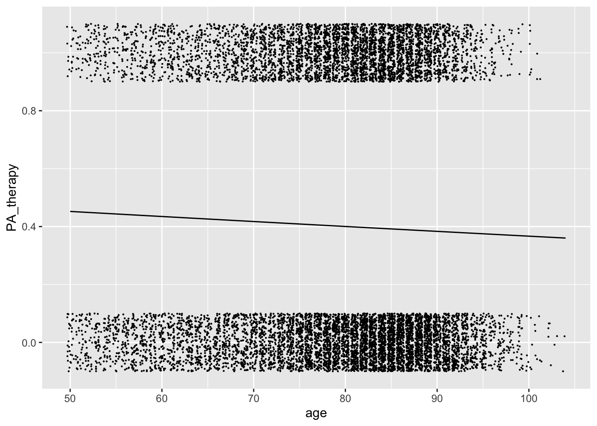
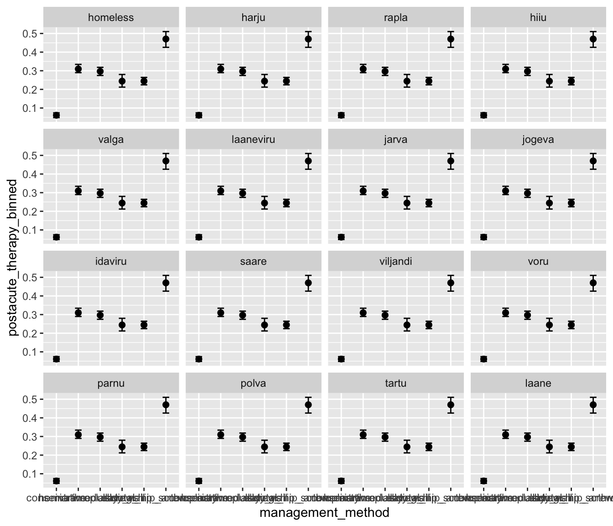
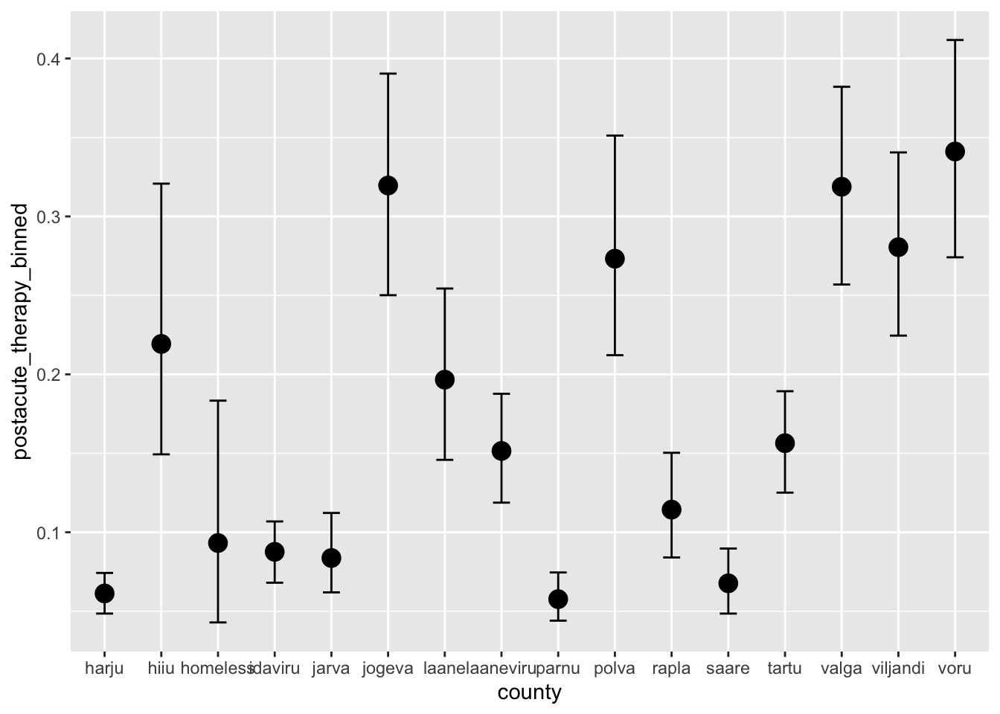
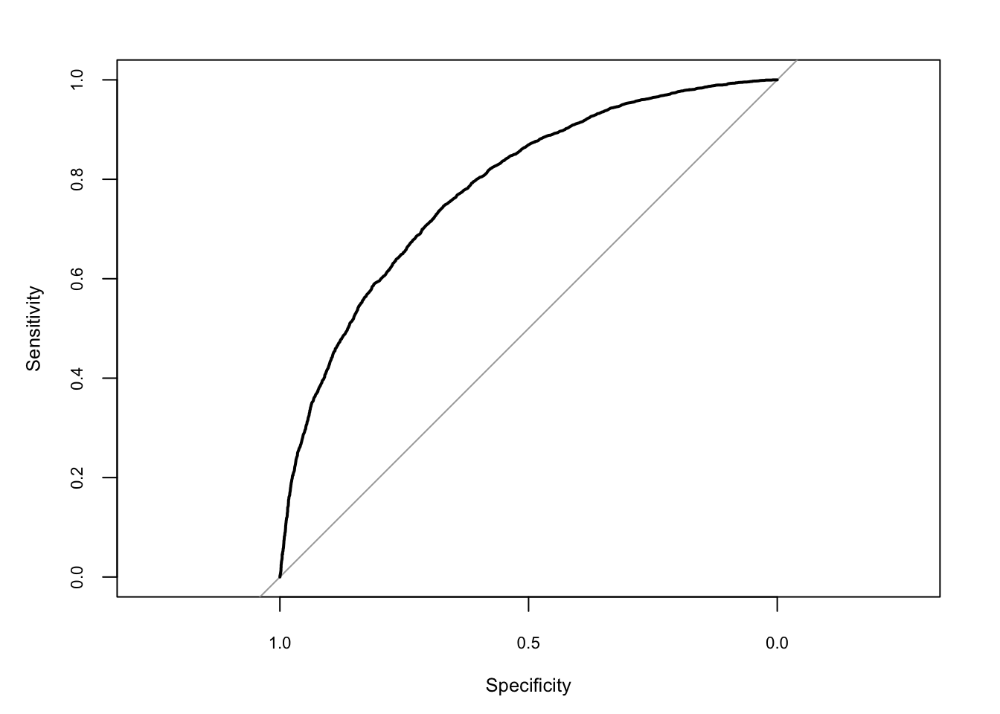

Show code
x <- seq(-7,7, length.out = 100)
y <- exp(x) / (1+exp(x))
ggplot(data=NULL, aes(x,y))+ geom_line()+ theme_bw()
What to do, when the predicted variable (the y-variable) contains only two values (success/failure of a treatment, 0/1) and we want to model the probability of success or the success rate? Then we use the binomial likelihood and we have two major options for modelling. Firstly, we can use ordinary linear regression in the form
\[y_i \sim Binom(n, p)\] \[p = \beta_0 + \beta_1 x_1\] where y is the nunber of successes and n is the nr. of tries (defined as the nr. of failures plus the nr. of successes), or in brms code brm(y|trials(n) ~ x1 + x2, famimiy= binomial(), link="Identity", ...)1. In this model the X-predictors are linearly associated with the probability of success and the coefficients are directly about probability of success. For example, \(\beta_1\) tells us how much probability of success changes (in percentage points) if \(X_1\) increases by one unit. In an randomized controlled experiment (RCT) with a binary outcome, the \(\beta_1\) measures the difference in the probability of a positive outcome between treated and controls (coded in the \(X_1\) variable): It is an absolute effect measure. This is all fine. However, there are two potential problems with linear models: (i) it is possible to predict probabilities that are outside the probability scale and, more importantly, (ii) it is often the case that binary y-variables are related to x-variables in a non-linear fashion with smaller increments in the probability of the outcome at extreme X-values. Therefore, a second modelling strategy was created where non-linearity of the response of the success probabilities to x-values is introduced by modelling log-odds, instead of modelling probabilities directly (see chapter 6.1). This strategy, called logistic regression, has been hugely popular for several decades, but recent work suggests that the simple linear approach is actually better for many approaches involving causal interpretation of the regression coefficients, especially in RCTs (Annu Rev Sociol 44, 1–16 2018). The reason is that slope coefficients for logistic regression (as well as for probit models, and for multinomial logistic regression) are downward biased due to unobserved variables that correlate with the success rate, but not necessarily with the X-variables. This means that logistic regression slopes cannot be causally interpreted by their magnitude (but can by sign or direction of the effects). Also, it is compliated to use them to campare nested models, or even effect sizes in RCTs. None of these problems apply for the linear models 2. The reader should keep this in mind when reading the rest of this chapter. If, however you should decide to fit a linear model instead of a logistic one, be sure to explain the reasons and give the Annual Review reference for the benefit of referees, who are very likely completely unaware of the problems with logistic regression and will (initially, hopefully) consider your decision a sign of gross incompetency.
If we want to estimate the p parameter (probability) from a binomial model \(k|N \sim Binomial(p)\), where p is redefined as a process model, for example \(p = \beta_0 + \beta_1 X\), then we would like the p estimates for different values of predictor(s) X to be bounded by 0 and 1 (the probability scale). There are many functions that behave like this, but it is the logistic function that is mostly used in regression models.
x <- seq(-7,7, length.out = 100)
y <- exp(x) / (1+exp(x))
ggplot(data=NULL, aes(x,y))+ geom_line()+ theme_bw()
In this curve the slope first gradually increases until the mid-point (at x=0, y=0.5), where it achieves its maximum value, and then starts to decrease again.
In logistic regression with binomial data model (likelihood) the Y-data are the number of “successes” (k) and the the number of tries (N), but what we actually estimate is not k, but the probability of success, conditional on the predictors X, or \(P(Y=1 \vert X)\).3
To achieve estimation in the probability scale, we are not transforming the data, but the model structure itself. We start with the logistic transformation, which for the simple linear function \(y = P(Y = 1 \vert X) = \beta_0 + \beta_1x\) is
\[P(Y = 1 \vert X) =\frac{exp(\beta_0 + \beta_1x)}{1 + exp(\beta_0 + \beta_1x)}\]
This transformation of the process model results in the S-shaped logistic curve of the Y estimations. The inverse of the logistic function is the logit function, which gives out odds: \(odds = \frac {p}{1 - p}\). Mathematically, it makes no difference whether you view your model as logistic-transformed or logit-transformed – these model descriptions are equivalent.
In any case, when using the logit-transformation we model the dependence of y-value on x-values as a straight line. In the probability scale our prediction becomes the S-shaped logistic curve.
The logit of probability p, logit(p), equals log(odds):
\[logit(p)=\log \left({\frac {p}{1-p}}\right)=\log(p)-\log(1-p)\]
The probabilities, the odds and the log-odds relate to each other like this:
# A tibble: 11 × 3
p odds log_odds
<dbl> <dbl> <dbl>
1 0 0 -Inf
2 0.1 0.111 -2.20
3 0.2 0.25 -1.39
4 0.3 0.429 -0.847
5 0.4 0.667 -0.405
6 0.5 1 0
7 0.6 1.5 0.405
8 0.7 2.33 0.847
9 0.8 4 1.39
10 0.9 9 2.20
11 1 Inf Inf 
For the non-transformed process model \(y = \beta_0 + \beta_1x\) the odds equals the exponent from fitted linear model:
\[odds= \frac {P(Y = 1 ~\vert~ X)}{1-P(Y = 1 ~\vert~ X)} = exp(\beta_0+\beta_1x)\]
and equivalently
\[log(odds) = logit(p) = \beta_0 + \beta_1x\]
With the simple process model, the interpretation of the \(\beta_1\) coefficient is that when we increase the X-variable by one unit, then the log odds increase by \(\beta_1\) units, and odds increase by \(exp(\beta_1)\) units. Note that \(\beta_1\) does not correspond to any fixed rate of change in \(P(Y = 1 \vert X)\). This rate depends on the value of X. Still, as long as \(\beta_1 > 0\), the \(P(Y = 1)\) is guaranteed to increase in response to any increase in X (and vice versa).
When we subtract the log-odds of two probabilities, we get the logarithm of the odds ratio:
\[{log} (OR)= {logit} (p_{1})- {logit} (p_{2})\]
Odds-ratio
We have a drug vs placebo experiment with binary outcome (alive/dead). Thrn
a - drug/alive nr of cases,
b - drug/dead nr of cases,
c - placebo/alive nr of cases,
d - placebo/dead nr of cases.
\[OR = \frac {a/b}{c/d}\]
OR = 1 Drug has no effect on the odds of the outcome (being alive)
OR > 1 Drug increases the odds of being alive
OR < 1 Drug decreases the odds of being alive
Logistic regression generalizes the odds ratio beyond two binary variables. When we have a binary Y-variable and binary \(X_1\)-variable (drug vs placebo) and a set of other predictors (\(X_2...X_n\)), then the \(\beta_1\) coefficient for \(X_1\) is connected with conditional OR. \(\exp(\beta_1)\) gives the odds ratio of Y for the two \(X_1\) values, given that all other predictors are fixed (this is the usual interpretation of independent linear regression slopes).
We have a drug candidate study with two groups, 350 subjects in each.
273 subjects out of 350, who got the drug candidate, recovered from the disease.
289 out of 350, who got the placebo, recovered.
Does the drug work?
Calculating simple fractions shows that with the drug 78% of subjects survived and with placebo 82% survived, indicating that the drug is less than useful. We next fit a model akin to Fisher’s exact test or chi-square test in traditional statistics.
The model structure is:
\[y_i \sim Binomial(n, p)\] \[logit(p) = \beta_0 + \beta_1x_i\] \[\beta_0, \beta_1 \sim N(0,1)\]
where the first row is the data model (likelihood), the second row re-defines the single parameter p of the binomial distribution as logit-transformed and substitutes it with a linear model with 2 parameters. The third row gives identical normal priors for these parameters. In the model y corresponds to the vector of k values at both drug and placebo conditions, and x corresponds to the “drug” variable with two levels (0 for the placebo condition and 1 for the drug condition). The index i indicates that the model sees individual y and x values in pairs, as defined by the row index i. This way we can use individual x-values to predict the corresponding y-values.
d1 <- tibble(k= c(273,289), N=c(350, 350),
drug=c("1", "0"))
m_d1.1 <- brm(k|trials(N)~drug,
data = d1,
family = binomial(),
# link="logit" is the default for the binomial family.
prior = prior(normal(0,1), class="b"),
file = "models/m_d1.1")
posterior_summary(m_d1.1)[-3,] Estimate Est.Error Q2.5 Q97.5
b_Intercept 1.5597475 0.1404037 1.2875077 1.83013985
b_drug1 -0.2941516 0.1893265 -0.6647871 0.07680444pairs(m_d1.1)
The model predictions for the surviving fractions of subjects under both conditions:
conditional_effects(m_d1.1)
Now lets generate the expected number of survived patients under both scenarios (per 100 patients, as specified by us).
newdata <- data.frame(drug= c("0", "1"), N=c(100, 100))
fitted(m_d1.1, newdata = newdata) Estimate Est.Error Q2.5 Q97.5
[1,] 82.53977 2.015927 78.37250 86.17784
[2,] 77.91857 2.223861 73.34701 82.01001Next, lets predict for the 4000 rows of the posterior table, first in logit scale, then transform into Pr scale, then summarizing into mean and 95% CI. For each of these 4000 rows we make a counterfactual prediction that drug is either “0” or “1”. posterior_linpred() predicts in the logit scale, so we need to use inv_logit_scaled() to back-tranform into probability scale.
m_d1.1 %>% posterior_linpred(newdata = newdata) %>%
inv_logit_scaled() %>% posterior_summary() Estimate Est.Error Q2.5 Q97.5
[1,] 0.8253977 0.02015927 0.7837250 0.8617784
[2,] 0.7791857 0.02223861 0.7334701 0.8201001using posterior_epred() we make our predictions directly in the metric of surviving patients per 100 people who take the drug or placebo. We still make 4000 predictions for each condition and then summarize these as before.
m_d1.1 %>% posterior_epred(newdata = data.frame(drug= c("0", "1"), N=c(100, 100))) %>%
posterior_summary() Estimate Est.Error Q2.5 Q97.5
[1,] 82.53977 2.015927 78.37250 86.17784
[2,] 77.91857 2.223861 73.34701 82.01001Now lets extract posterior samples from the fitted model and use these to interpret the model coefficients.
m_post <- as_draws_df(m_d1.1)
m_post$b_Intercept %>% inv_logit_scaled() %>% posterior_summary() Estimate Est.Error Q2.5 Q97.5
[1,] 0.8253977 0.02015927 0.783725 0.8617784This is the intercept in probability scale - the survival rate when drug = 0.
inv_logit_scaled(m_post$b_drug1 + m_post$b_Intercept) %>% posterior_summary() Estimate Est.Error Q2.5 Q97.5
[1,] 0.7791857 0.02223861 0.7334701 0.8201001This is the intercept + slope in probability scale - the survival rate when drug = 1.
exp(m_post$b_drug1) %>% posterior_summary() Estimate Est.Error Q2.5 Q97.5
[1,] 0.7586338 0.1449302 0.514383 1.079831This is the odds ratio (OR) of drugs effect on survival, with 95% CI-s that describe our uncertainty about its true value (the model thinks that true OR is probably somwhere between 0.5 and 1.1). The odds ratio (OR) is pretty clearly to the detriment of the drug
mean(m_post$b_drug1>0)[1] 0.05625The probability that the drug effect is actually positive is about 0.06 (this is a Bayesian p value).
And this is the effect size in percentage points with 95% CI.
a <- inv_logit_scaled(m_post$b_drug1 + m_post$b_Intercept) - inv_logit_scaled(m_post$b_Intercept)
posterior_summary(a) Estimate Est.Error Q2.5 Q97.5
[1,] -0.04621202 0.02968225 -0.1047609 0.01208628Again, we can get the same Bayesian p value as before:
mean(a>0)[1] 0.05625For our second example we model a continuous predictor, age, to see how getting postacute physical therapy depends on patients age in Estonia.
HF_data <- read_delim("data/HF_data.csv",
delim = ";", escape_double = FALSE, trim_ws = TRUE)m_HF_binom1 <- brm(postacute_therapy_binned~age,
data=HF_data,
family = bernoulli(),
chains = 1,
file = "models/m_HF_binom1")
conditional_effects(m_HF_binom1)
There is a clear dependence on age: older patients are considerably less likely to get the therapy they need. Altough, even the younger ones are more likely than not to get no physical therapy after hip fracture!
Next we plot this prediction together with individual data points (we use jitter to better visualize otherwise ovelapping data - each patient has either a 0 or 1 as his/her therapy status).
HF_data <- HF_data %>% mutate(PA_therapy = case_when(postacute_therapy_binned=="Yes"~1,
TRUE ~0))
newx <- expand.grid(age = modelr::seq_range(HF_data$age,
n = 100))
aa2 <- fitted(m_HF_binom1, newdata = newx) %>% cbind(newx, .)
ggplot(data = aa2, aes(x = age, y = Estimate)) +
geom_jitter(data = HF_data, aes(age, PA_therapy), height = 0.1, size=0.1) +
geom_line() 
And finally a more serious model, where we add as predictors a bunch of variables, which we think might also influence people getting therapy. We intend this as a model with more predictive power, if not a causally relevant model.
m_HF_binom2 <- brm(postacute_therapy_binned~age + year + survived_PAC + sex + county + comorbidity + management_method + acute_LOS + postacute_LOS,
data=HF_data,
family = bernoulli(),
chains = 1,
file = "models/m_HF_binom2")
xx <- data.frame(county =make_conditions(HF_data, "county"), row.names = unique(HF_data$county))
conditional_effects(m_HF_binom2, effects = "management_method",
conditions = xx)
conditional_effects(m_HF_binom2, effects = "county")
HF_data <- HF_data %>% mutate(PA_therapy = case_when(postacute_therapy_binned=="Yes"~1,
TRUE ~0))
newx <- expand.grid(age = modelr::seq_range(HF_data$age, n = 100),
year = 2016,
survived_PAC = 1,
sex="f",
county = "harju",
comorbidity = 0,
management_method = "hemiarthroplasty",
acute_LOS = 10,
postacute_LOS=1)
aa4 <- fitted(m_HF_binom2, newdata = newx) %>% cbind(newx, .)
ggplot(data = aa4, aes(x = age, y = Estimate)) +
geom_jitter(data = HF_data, aes(age, PA_therapy), height = 0.1, size=0.1) +
geom_line() These are used for determining the best cutoff value for predicting whether a new observation is a “failure” or a “success”. When choosing a classification cutoff (let’s say 0.5), you are classifying every observation with a predicted probability equal to or greater than 0.5 as a “success”, nevermind if that outcome was actually a success. While any observed outcome can only be 0 or 1, the predicted probabilities can take on any value between 0 and 1. Each point on the ROC curve represents a possible cutoff value for classifying predicted values. In the start of the curve, where specificity is high, the predicted probabilities of successes that lead to classification as success (or “1”) are close to 1, so there is very little chance that an event that actual data-level “failures” are mis-classified as “successes”. Conversely, in the start region the sensitivity is very low, meaning that the vast majority of data-level “successes” are mis-classified as “failures”.
glm.probs <- predict(m_HF_binom2, type = "response") %>% as.data.frame()
library(pROC)
#both vectors need to be the same length
roccurve <- roc(HF_data$postacute_therapy_binned ~ glm.probs$Estimate)
plot(roccurve, cex.axis = 0.7, cex.lab = 0.8)
A ROC curve looks at every possible cutoff value that results in a change of classification of any observation in your data set and for every classification cutoff that results in a change of classification, a dot is placed on the plot. Whatever the cutoff, a certain number of the rows of data will be correctly classified, and a certain number will be mis-classified. Sensitivity is the proportion of 1s that you correctly identified as 1s using that particular cutoff value, or the true positive rate. Specificity is the proportion of 0s that you correctly identified as 0s, or the true negative rate.
Sensitivity = (number correctly identified 1s)/(total number observed 1s)
Specificity = (number correctly identified 0s)/(total number observed 0s)
The ROC curve shows graphically the tradeoff between trying to maximize the true positive rate vs. trying to minimize the false positive rate.
AUC evaluates how well a logistic regression model classifies positive and negative outcomes at all possible cutoffs. It can range from 0.5 to 1, and the larger it is the better. People sometimes use the AUC as a means for evaluating predictive performance of a model, but because it represents all possible cutoff values, this is nod good practice. Rather use the ROC curve to choose a cutoff value. How do determine which cutoff to use, depends if false negatives are worse for you than false positives, or vice versa.
auc(roccurve)Area under the curve: 0.7821dd <- glm.probs %>% bind_cols(HF_data)
dd <- dd[,c(1, 21)]
dd <- dd %>% mutate(pred=case_when(Estimate >= 0.5 ~ 1,
Estimate < 0.5 ~ 0))
act_1_pred_0 <- filter(dd, postacute_therapy_binned=="Yes", pred == 0) %>% nrow()
act_1_pred_1 <- filter(dd, postacute_therapy_binned=="Yes", pred == 1) %>% nrow()
act_0_pred_1 <- filter(dd, postacute_therapy_binned=="No", pred == 1) %>% nrow()
act_0_pred_0 <- filter(dd, postacute_therapy_binned=="No", pred == 0) %>% nrow()
cm <- tribble(~therapy,~predicted_right, ~predicted_wrong,
"no", act_0_pred_0, act_0_pred_1,
"yes", act_1_pred_1, act_1_pred_0)
cm# A tibble: 2 × 3
therapy predicted_right predicted_wrong
<chr> <int> <int>
1 no 5710 1162
2 yes 2590 2032#sensitivity
2596/(2596+2026)[1] 0.5616616#specificity
5700/(5700+1172)[1] 0.8294529At least 4 ways of doing it:
1. Linear probability models
In the world of econometrics, having the fitted regression line go outside the 0–1 range is fine. Linear probability model (LPM) models data like this, and for values that aren’t too extreme (the outcome ranges between 0.2 and 0.8), the results are generally equivalent to fancier non-linear models. LPMs are even arguably best for experimental data.
2. Fractional logistic regression
Logistic regression is normally used for binary outcomes, but you can use it for proportional data too. This kind of model is called fractional logistic regression. glm(..., family = quasibinomial(link = "logit")).
3. Beta regression
An alternative to the above mean-focused regression is to use distributional regression to estimate not lines and averages, but the overall shapes of statistical distributions. brm(bf(proportion ~ x, phi ~ x), data = d, family = Beta() This usues the parametrization of Beta distribution: \(\mu\) and \(\phi\) (location and variance).
One problem with beta regression is that the beta distribution does not include 0 and 1. If your data has has 0s or 1s, the model breaks.
4. Zero-inflated beta regression
We still model the mean and precision of the beta distribution, but we also model one new special parameter \(\alpha\). With zero-inflated regression, we are modelling a mixture of data-generating processes:
A logistic regression model that predicts if an outcome is 0 or not, defined by \(\alpha\).
A beta regression model that predicts if an outcome is between 0 and 1 if it’s not zero.
The only difference between regular beta regression and zero-inflated regression is that we have to specify one more parameter: zi. This corresponds to the \(\alpha\) parameter and determines the zero/not-zero process. brm(bf(prop_fem ~ quota,phi ~ quota,zi ~ 1), data = d,family = zero_inflated_beta())
But what if you have both 0s and 1s in your outcome? There is a variation for zero-one-inflated beta (ZOIB) regression. ZOIB regression models a mixture of three things:
A logistic regression model that predicts if an outcome is either 0 or 1 or not 0 or 1, defined by \(\alpha\) (or alternatively, a model that predicts if outcomes are extreme (0 or 1) or not (between 0 and 1).
A logistic regression model that predicts if any of the 0 or 1 outcomes are actually 1s, defined by \(\gamma\) (or alternatively, a model that predicts if the extreme values are 1)
A beta regression model that predicts if an outcome is between 0 and 1 if it’s not zero or not one (or alternatively, a model that predicts the non-extreme (0 or 1) values).
brm(
bf(
outcome ~ covariates, # The mean of the 0-1 values, or mu
phi ~ covariates, # The precision of the 0-1 values, or phi
zoi ~ covariates, # The zero-or-one-inflated part, or alpha
coi ~ covariates # The one-inflated part, conditional on the 0s, or gamma
),
data = d,
family = zero_one_inflated_beta())Also see:
What if your proportion-based outcome has a bunch of 1s and no 0s? There are two ways to do one-inflated regression:
Reverse your outcome so that it is 1 - outcome instead of outcome and then use zero-inflated regression.
Use zero-one-inflated beta regression and force the conditional one parameter (coi, or the \(\gamma\) in that model) to be one, meaning that 100% of the 0/not 0 splits would actually be bf(..., coi = 1).
y and n variables together make up the data that is used in constructing the predicted variable in the model.↩︎
but note that unobserved variables that do correlate with x-variables, are a problem for causal interpretation everywhere↩︎
\(P(Y = 1 \vert X)\) means “probability of Y = 1 (for example, that the predicted value is”Male” == 1) given a particular X-predictor value (or a set of values for different X-predictors).↩︎
\(exp(a)\) means \(e^a\), where \(e\) is the Euler number, or the number whose natural logarithm is 1 (\(e\) is the base of the natural logarithm). \(e\) is about 2.71828 and we get it from the equation \((1 + 1/n)^n\), if n approaches infinity.↩︎